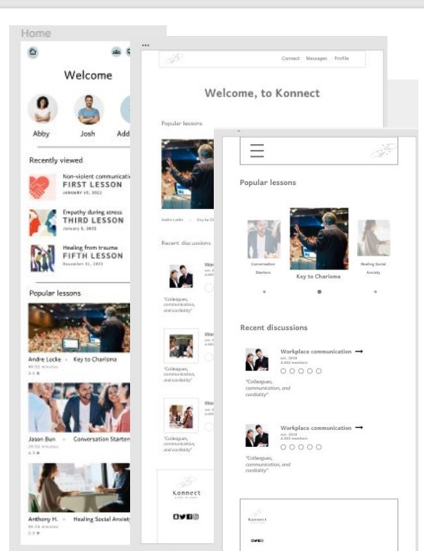
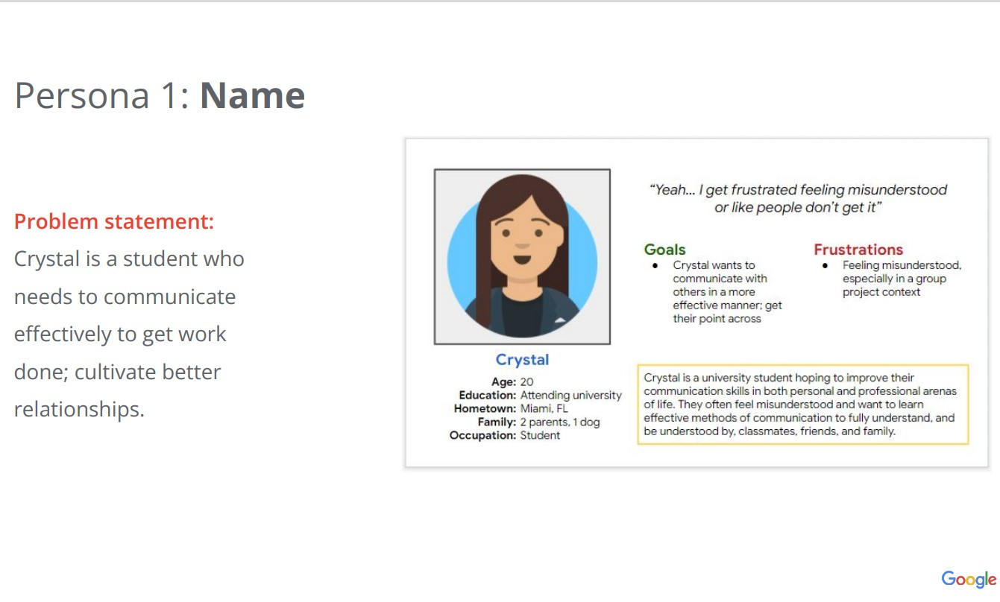
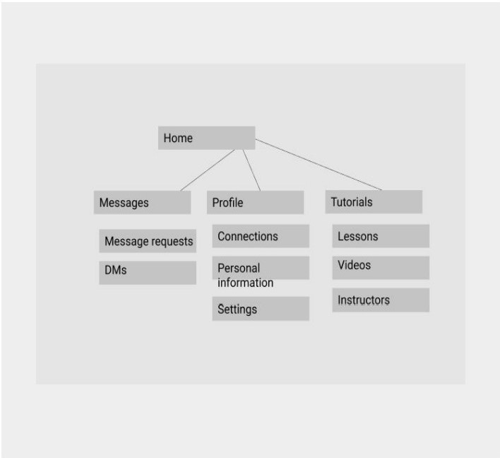
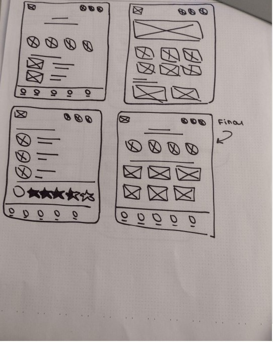
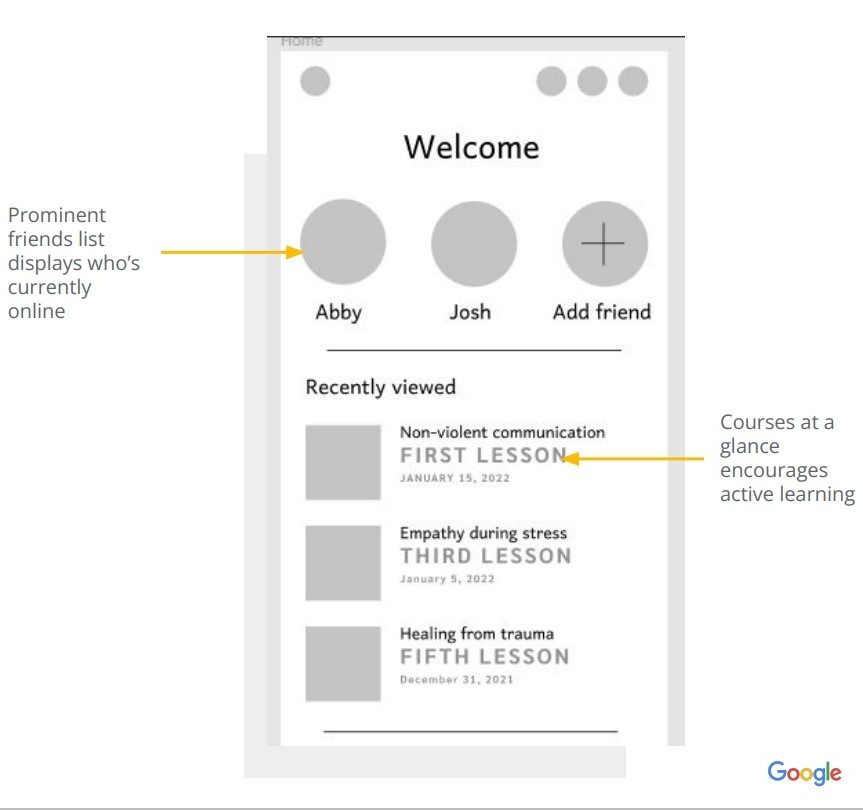
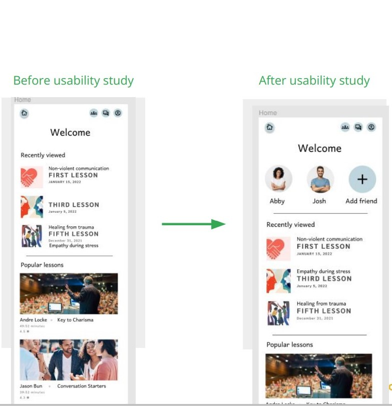
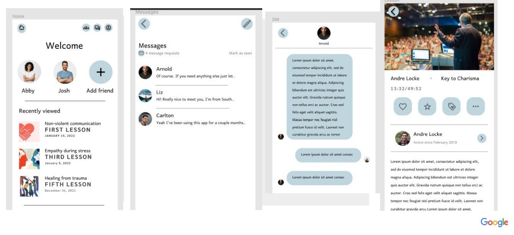
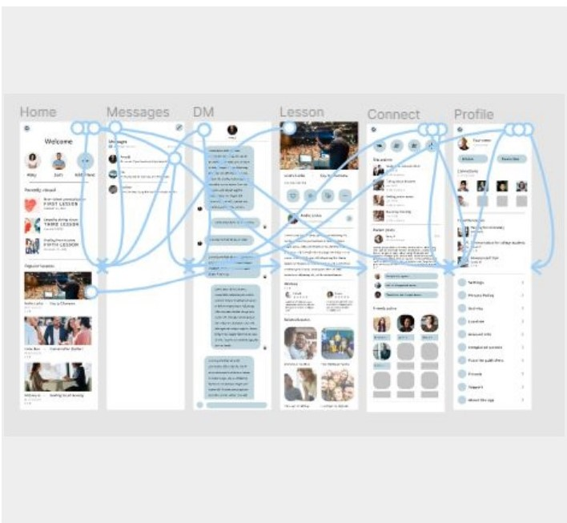

Connection Service
Project Overview
The product: A social connection app designed to help people find common goals and improve communication skills
Project Duration: 14th Febrauray-25th May
The Problem
Lack of communication skills; feeling misunderstood, miscommunicating points.
The Goal
Help young people learn communication skills and connect with others in a meaningful way, considering emotional needs.
My Role
Lead UX Designer and Researcher
Responsibilities
- User Research
- Wireframing adn Prototyping
- User Testing
User Research
Research included studying the link between emotional well-being and quality of interpersonal relationships; testing the main user flow; and identifying points where the app could be imporved to give users a more personalized, friendly experience.
Personas
SiteMap
Paper Wireframes
Digital Wireframes
Low-Fidelity Wireframes

Usability Study
Findings
- Finding 1: Simplicity is king.
- Finding 2: Connection needs to be made clear.
- Finding 3: The app must balance active communication with learning.
Mockups
 High-Fidelity Prototype
Accessibility
- A solid white background for great contrast concerning images and text.
- Connect uses industry standards-'home', 'messages', and 'profile' icons, for example-to reach a wider audience.
- Accessibility settings are featured whrn tapping the 'Settings' icon on the profile screen.
Takeaways
- Impact: Konnect is an app that will help people specifically, young individuals interested in self-improvement-gain direction and communication for the rest of their lives.
- What I learned: I learned that different approaches and prerspectives are essentia; empathy is the cornerstone of communication, any communication, and it's something we must strive to cultivate.
Next Steps
- Next, I would market the app and work on contacting qualified instructors to add to Kinnect's knowledge and learning base.
- Conducting a pilot study with young individuals-a group of college students, for example- would provide needef insight into what to prioritize.
- I would work on incorporating 'events' or seminars within the app to draw more people to the community and provide value.